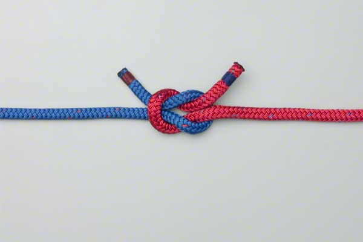

To create an Square Knot, cross two ropes, rope A over rope B, and then turn them both around 180°, and again cross rope A over rope B. Tighten to complete the knot.
Cross rope A over rope B. |
|
Turn both ropes around 180°. |
|
Cross rope A over rope B again. |
|
|  | Tighten to Complete |
The Square Knot is not appropriate for safety-critical systems, but it is a simple knot useful both for teaching some knot-tying fundamentals, as well as many other casual applications.
Made for CS 3500 during the Spring 2019 semester at Western Michigan University.
All content on this website are not meant to be monetized in any format.